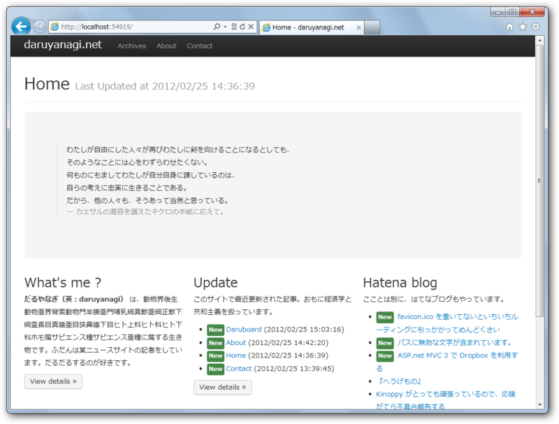

Webサイトをリニューアルしてみました
公開日：

若干動きが怪しい部分があるけれど、とりあえずできたのでデプロイしてみた。ローカルよりも ExpressWeb の方がサクサク動いているのはなんでなんだぜ？
Daruboard は、ASP.NET MVC 3 製の Wiki っぽいモノです。
Dropbox と連携
データベースは Dropbox。Dropbox のクライアントソフトを利用すれば、ローカルファイルシステムからコンテンツを更新できます。リビジョン管理も Dropbox 任せ。
Daruboard - daruyanagi.netMarkdown 記法
コンテンツを Markdown でサクサク書けます。HTML（断片）を扱うことも可能。
今んところ編集機能が無い（Dropboxのクライアントで何とかするしかない）のでそれを追加したい。あと、画像のアップロード機能を付けたい。テスト版は作ってあるので、ちょろちょろ本体へマージしていく予定。はてなブログみたいに、ドラッグ＆ドロップでアップロードできるようにしたいのだけど、ちょっと四苦八苦してる。